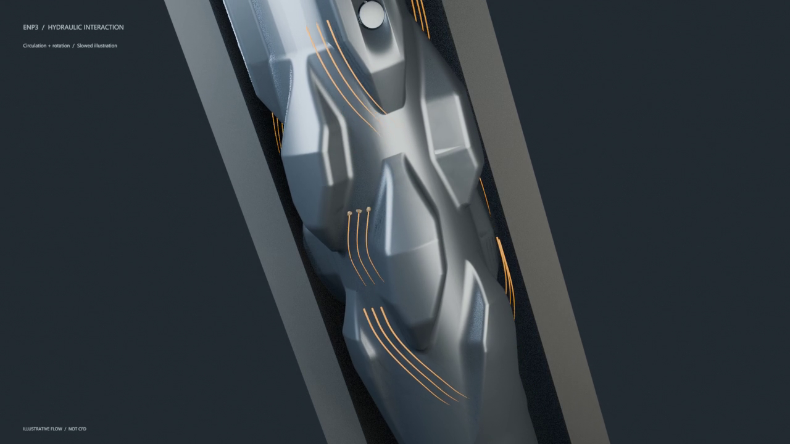
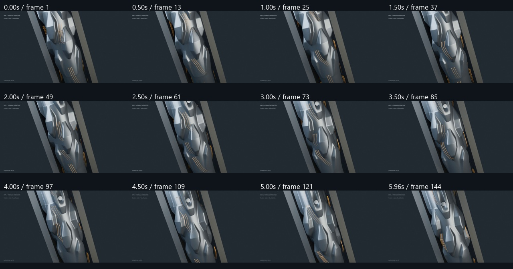

Six-second proof: slow clockwise tool rotation, upward circulation and transported rock fragments. Tapered amber tails make the changing flow pattern readable. Illustrative motion, not CFD or measured operating speed.

